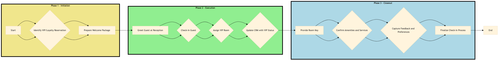

| Role | Steps |
|---|---|
| Front Desk Agent | 1.1 1.2 2.1 2.2 3.1 3.2 3.4 |
| Revenue Manager | 1.1 2.3 2.4 3.3 |
| Executive Housekeeper | 2.4 3.2 |
| Step | Name | Role | System | Input | Output | KPI | Dec? | Exc? | Pain Point / Risk |
|---|---|---|---|---|---|---|---|---|---|
| 1.1 | Identify VIP/Loyalty Reservation | Front Desk Agent | Oracle OPERA Cloud | Reservation details | VIP/Loyalty status flagged | Less than 2 minutes | Y | N | Incorrectly identifying VIP status can lead to missed benefits. |
| 1.2 | Prepare Welcome Package | Front Desk Agent | Oracle OPERA Cloud, Birchstreet Procurement | VIP/Loyalty member details | Welcome package prepared | Less than 5 minutes | N | Y | Delayed delivery of welcome packages can affect guest satisfaction. |
| 2.1 | Greet Guest at Reception | Front Desk Agent | Oracle OPERA Cloud | Guest arrival notification | Personalized greeting | Less than 30 seconds | N | Y | Rushing through greetings can lead to a lack of personal touch. |
| 2.2 | Check-In Guest | Front Desk Agent | Oracle OPERA Cloud, IDeaS G3 RMS | Guest details and reservation information | Checked-in guest record | Less than 2 minutes | N | Y | Errors in check-in can cause delays and confusion. |
| 2.3 | Assign VIP Room | Front Desk Agent, Revenue Manager | Oracle OPERA Cloud, IDeaS G3 RMS | Guest preferences and availability | Room assignment confirmation | Less than 1 minute | Y | N | Incorrect room assignments can lead to guest dissatisfaction. |
| 2.4 | Update CRM with VIP Status | Front Desk Agent, Revenue Manager | Marriott Bonvoy CRM | Guest details and VIP status | Updated CRM record | Less than 1 minute | N | Y | Outdated CRM data can affect future interactions. |
| 3.1 | Provide Room Key | Front Desk Agent, Assa Abloy VingCard | Oracle OPERA Cloud, Assa Abloy VingCard | Guest details and room assignment | Room key issued | Less than 30 seconds | N | Y | Lost or misplaced keys can cause inconvenience. |
| 3.2 | Confirm Amenities and Services | Front Desk Agent, Executive Housekeeper | Oracle OPERA Cloud, Oracle MICROS Simphony | Guest requests | Service confirmation | Less than 2 minutes | Y | N | Unmet guest requests can lead to negative reviews. |
| 3.3 | Capture Feedback and Preferences | Front Desk Agent, Revenue Manager | Oracle OPERA Cloud, Marriott Bonvoy CRM | Guest feedback | Updated guest profile | Less than 1 minute | N | Y | Ignoring guest feedback can affect loyalty and future bookings. |
| 3.4 | Finalize Check-In Process | Front Desk Agent | Oracle OPERA Cloud | All check-in details | Completed check-in record | Less than 1 minute | N | Y | Incomplete records can lead to operational errors. |
The process for handling VIP and loyalty member arrivals at a full-service Marriott hotel involves seamless check-in procedures, personalized guest experiences, and efficient use of various Marriott systems to ensure satisfaction.